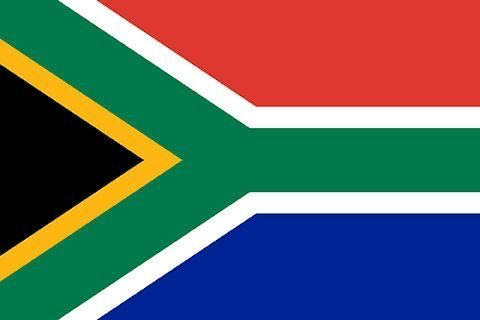

Minenhle Hlongwane
My name is Minenhle and I by Minnie. I am from South Africa I live in Durban with my family I am currrently a full time online student at BYU Idaho, I am studying web and software development My hobbies are drawing, painting, crafting, cooking, hair and makeup. I love to learn new things.
Durban, South Africa

Nestled on the eastern coast of South Africa, Durban is a vibrant city where the golden beaches of the Indian Ocean meet the rich cultural tapestry of KwaZulu-Natal. Known for its year-round warm climate, Durban is a paradise for surfers and sun-seekers. The city's skyline is adorned with modern architecture, while its streets pulse with the rhythms of Zulu traditions and the aromatic flavors of Indian cuisine. The scenic promenade, bustling markets, and lush botanical gardens create a picturesque blend of urban life and natural beauty.